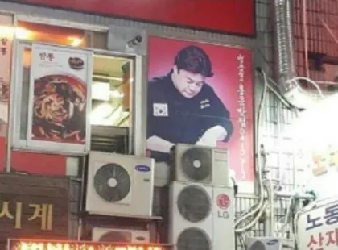

못하는게 없으시네 ㄷㄷ

못하는게 없으시네 ㄷㄷ
지구온나나의 주범!!!!!!!!!!!!!!!!!!!!!!!!!!!!!!!
윌리스 빽리어 ㄷㄷㄷ
아잇 부품가지수가 지금 100개가 넘으니가 제대로 작동 안하는거 아녀유!!!
부품 가지수를 줄여야지!!
여기는 뭐 냉매 잡아드려야할거 없쥬?
잇 콤프렛샤를 잘못사가지고 발명한게 에어콘입니다
하아 미치겠네~ 에어컨을 쓰던 겁니까? 새걸 사 갖고
흔히들 알고 계시는 그거 제가 개발하고 제가 진짜 특허까지 갖고 있는 거거든요
에어컨에 어묵을 넣지 말란 법이 있을까?
필터 대신에 어묵을 넣으면 상큼한 바다향도나고 좋츄?
구로디지털단지네
에어컨을 고칠려고 갔는데 실수로 햄써는 기계를 사버린거야
이건 실외기국이잖아
여긴 냉매 잡아드려야 하는거 없죠?
우리 냉방 하지 말까요?
사장님 여기 시래기가 왜 이래유!!
시래기 다듬는중
법무팀에서 곧 연락올겁니다
에어컨이라는게 사실 백선생이 발명한거임